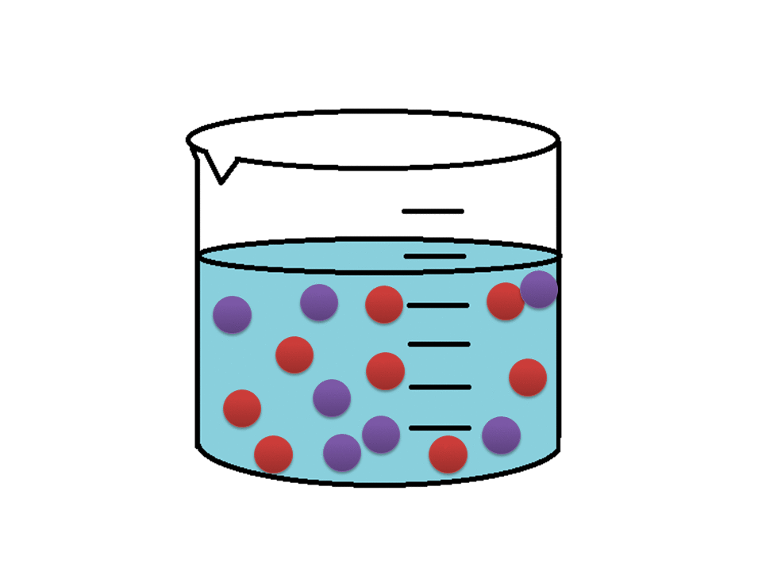
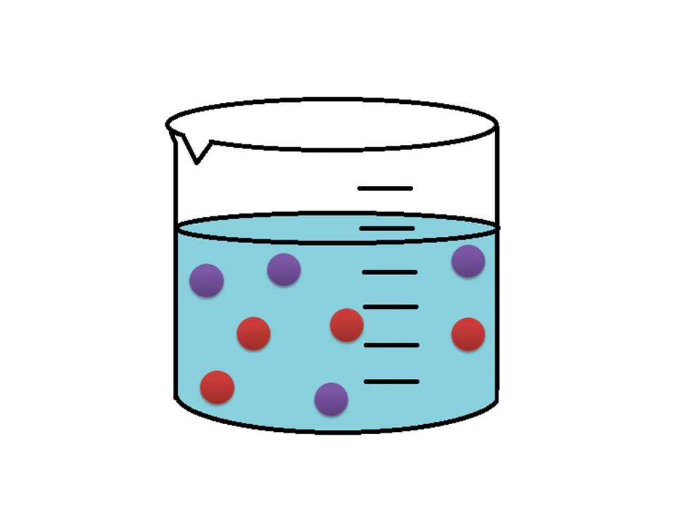

Quando há uma maior concentração de moléculas, eventualmente, irá haver mais colisões efetivas entre os reagentes e assim a reação
será mais rápida. No GIF é possível observar que há mais colisões efetivas.
Já quando há uma menor quantidade de moléculas confinadas num mesmo espaço, a reação acontece de forma mais lenta. Pelo fato
de ocorrer um número menor de colisões efetivas.
 CINÉTICA
CINÉTICA